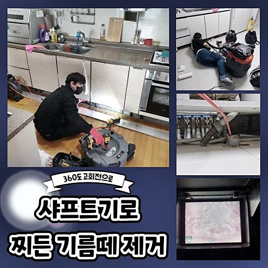
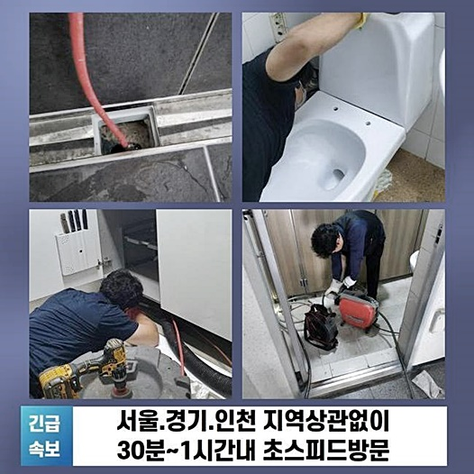
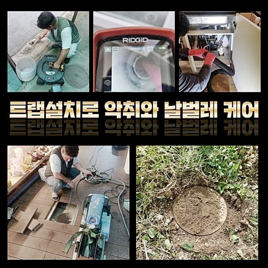
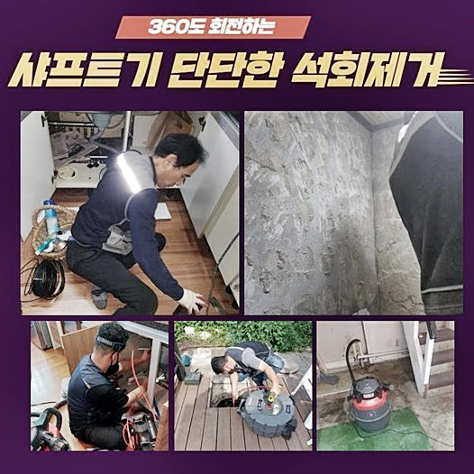
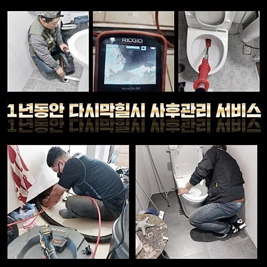
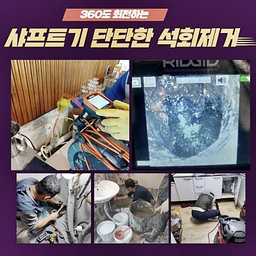
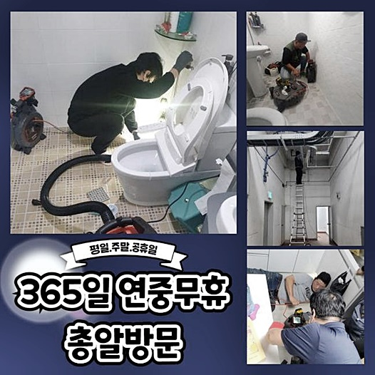

🏠 동작구 상도동욕실역류 사당동 하수관고압세척 통수전문
용인시 처인구 배관막힘 전문 시공 후기

📋 작업 개요
- 위치: 용인시 처인구, 수원시 영통구, 화성시 동탄
- 서비스 유형: 배관막힘, 고압세척, 내시경점검
- 작업 일시:
- 업체명: 하수구수사대 (010-5615-2118)
🔍 문제 상황
동작구 상도동욕실역류 사당동 하수관고압세척 통수전문
며칠전 찾아뵈었던 통수오류 위치에선 구조 시공을 이행하고 있으셨는데 곳곳을 살피니 소제구의 경우에는 바깥부분으로 돌출되어 있었으므로 점검을 함에 있어선 애로사항은 없었죠
원인의 경우 안의 하수도와 메인관로가 연결된 스팟에서 발생된 걸로 파악되었어요
배관끼리의 접합위치에 잔해들이 누적되는 까닭에 통수가 불가해 증세가 생겨난 것이죠
정확히 증상들을 타파할 목적으로 내시경장비를 이용한 다음 잔해의 누적된 양들을 본 뒤 작업들을 이행했죠
저희의 경우 내시경기기를 운용시켜 누적된 진단들을 실시하고 이것을 기초로하여 막혀버린 하수관을 해결해드리고 있어요
수리와 연관하여 디테일들이 궁금하시면 저희에게 상담을 진행해보세요
황급히 저희를 찾으셔서 계신 곳으로 조속히 방문드렸습니다
고객께 현재의 상황과 관련된 많은 설명들을 들었어요
그렇지만 증세가 발생된지 긴 기간이 지난것으로 보였습니다 더 나아가 가게들도 밀집해있어서 손실이 커진 식당 등도 많았죠
건물에서 물들을 사용하는것이 원활치 못함과 같이 상업시설의 막혀버리는 증세로 사면초가의 상태였어요
물이 안빠지는 사태는 판매량과도 관련이 큰 탓에 빠른 해결이 요구되었습니다
하수구막힘 원인의 경우 구조적인 부분이나 내식성과 관련한 것 등 자세한 까닭으로 발발합니다
위와같은 사안으로 인하여 시발점을 진단하는 시점엔 다양한 사항을 고려해야합니다 정확한 시발점들을 서둘러 알아냈는데 외부라인의 배수관인 것으로 밝혀졌어요

🔎 원인 분석
💡 전문가 진단: 정밀 진단 장비를 사용하여 슬러지의 고착 여부를 판명하고 타격/세척 작업을 실시했습니다.
각 가지관로나 집수정 등에서 야기되는 막힘문젠 생겨나는 지점도 다양하죠
고객분과 연락들을 거치고 달려가면 가정과 외부 집수정 등 문제발생의 지점이 정말 많아요
증상도 중구난방식인 까닭은 여러 영향을 받는 하수 시스템 오류의 문제로서 전문진의 절차를 밟지 않고서는 복구시키는게 만만치 않아요
종종 하수가 흐르지를 못해 시중에서 구매가능한 크리너로 대표되는 제품들을 써 본 경험이 있으신가요? 무조건적으로 이러한 용품을 쓰는게 그르다라는건 아니나 증상이 심할 경우에 역으로 작업기간이 늘어날 가능성이 있답니다
스스로의 힘으로도 안될땐 안심하고 도움을 청할 전문인이 필요할테죠
저희의 경우 일자와 관계없이 빨간 날에도 방문드립니다
의뢰하면 조속하게 달려가기에 작업 소모 시간들도 제한들이 존재하지 않아요
아침부터 밤이 되어도 연락한다면 달려갑니다
예상과는 달리 이물질의 양들이 많지 않아 석션장비로 원활하게 배출시켰습니다
그러던 와중에 화장실공간에서 역류해버리는 문제가 나타나 의뢰자께서 황급히 설명하셨어요
하부라인은 고압 석션장비로 어렵지않게 이물제거를 실시해주었고 빈틈없이 이어갔는데요
다음으로 화장실쪽의 동태를 살피고자 내시경장치를 이용해 메인으로 뻗은 지점도 관찰했습니다
다행으로 정확하게 된 위치를 조속하게 짚어내어 증세를 손 봐 주었고 소제구의 뚜껑들을 개봉하니 심한 모습을 관찰했죠
그리고 이 곳에서도 냄새들도 발생되었던 상태로서 겉으로 보아도 오염상태를 알았죠

🔧 작업 과정
첫번째로 바닥라인 청소를 진행할 생각으로 더 깊이 투입시켜 자리를 옮겨가며 작업한 다음 밖으로 나온 후 더욱 정확하게 된 확인들을 해보고자 내시경카메라를 사용했습니다
생각한 것처럼 하수관 속에는 단단해진 잔해들이 누적된 모습을 보았어요
이를 기초하여 증상을 바로 잡고자 최적의 작업 방식의 방향들을 수립했어요
의뢰인에게도 해당 형상을 설명하고 곧장 샤프트장치의 운용을 수행했죠
해당 장비의 경우 사슬을 곧이어 회전시켜 단단해진 잔해를 제거시켜주는 고마운 녀석인데요
저희 전문진은 내시경장치의 병행과 더불어 세척절차도 진행할 생각으로 뭉툭한 사슬들로 바꿔주었어요
이와같이 샤프트장치의 운용을 진행하였더니 오염된 고착물들이 벽면쪽에서 제거되기 수행했죠
지금껏 관리하지 않았던 공간인 탓에 스노우볼처럼 불어나 작업들이 어려웠어요
샤프트기기로 굳어진 이물들을 분쇄시키고 석션기기로 이물들을 흡입하여 배관을 시원하게 복구하기 시작했어요
혹시라도 초반부들만 해결하면 다시금 하수구막힘 증상이 올라올거에요
이처럼 연유를 찾는게 우선이기때문에 저희업체에선 눈에 띄게 증상을 복구하지 못할 시 수리비용을 청구하지 않죠
이런 정책은 여러분들과의 약속들로 안전을 기초로하여 작업에 임합니다
의뢰인분은 시정이 이뤄지지 못한 사태들에 마주했을때 비용지불과 관련된 피해들을 껴안고 갈 필요들이 없는것이죠
내시경기기로 관찰하였더니 수직배관 끝에까지 대량의 흡착물들이 축적되었어요
하수관로에 위치한 이물들은 청소가 안된다면 딱딱해져가는 특징이 있는데요
간소하게 시중 제품으론 깨끗하게 제거시키는게 불가하여 전문가용 기기들을 써줘야되겠습니다
서둘러 석션을 꺼내어 흡입과정을 거쳐 잔해들을 제거해주었는데요
고객분도 이처럼 엄청 많은 오염물이 쌓여버리게된건지 생각을 못했다고 당황하셨어요
배수관 표면은 멀쩡해 물샘은 관찰되지 않았지만 지금 상태로 방임적인 태도로 일관했다면 불편들이 어마어마했을텐데요
석션을 사용해 잔해를 세척한 후 내시경장비로 체크하니 내부 통로가 제대로 보였습니다
혹시라도 같은 증상이 재발해도 걱정마세요!
저희들은 일년 내에 as서비스를 실시합니다
저희업체가 다녀간 후 동일하게 재발한다면 비용이 들지않고 재작업을 실시합니다


✅ 작업 완료
최초 실시되었던 개선과 동일하게 전문인의 투입과 장치가 사용되니 편히 연락부탁드려요
청소한 오물들은 깨끗하게 정리해드리며 주변도 문제없이 석션기기로 제거시켰습니다
하수관이나 연결된 시설물들은 타의적인 사안들도 존재하겠으나 사용방식에 따라 악영향들로 흘러갈 여지가 많아요
생활하시면서 문제에 대해 인식하고 쓴다면 문제없는 하수관 컨디션들을 유지시킬 수 있죠
고객분의 입장에서 배수관련 문제들의 예방책들과 유의해야할 사항들까지 꼼꼼히 안내했는데요
통수 관련 문제들을 겪는 의뢰인분이 계시면 문의해보세요!




⚠️ 하수구 배관 막힘 예방 및 관리 가이드
- ✅ 머리카락, 비닐, 물티슈 등 물에 분해되지 않는 이물질은 절대 흘려보내지 마세요.
- ✅ 기름기 많은 식기는 설거지 전 키친타올로 먼저 기름때를 닦아내세요.
- ✅ 주기적으로 배수구에 뜨거운 물을 가득 부어주어 유지방 고착을 방지하세요.
- ✅ 작업 후 1년 이내 재발 시 무상 A/S 보증 서비스를 제공합니다.
💡 핵심 정리
- 확실한 장비 작업(내시경 점검 및 샤프트 스케일링)으로 원인을 뿌리 뽑습니다.
- 작업 후 1년 이내에 동일한 부위 재발 시 100% 무상 A/S 서비스를 보장합니다.
- 서울 · 경기 · 인천 전 지역에 24시간 언제든 긴급 출동할 수 있도록 항시 대기 중입니다.
❓ 자주 묻는 질문 (FAQ)
🚨 용인시 처인구 배관막힘 문제로 고민이신가요?
정확한 원인 진단과 확실한 시공으로 재발 없는 해결을 약속드립니다.
24시간 긴급 출동 | 서울 · 경기 · 인천 전지역 | 1년 내 재발 시 무상 A/S